Oversikt
Cloud Station for Synology NAS er et filsynkroniseringsprogram som enkelt lar deg synkronisere filer på din Synology NAS med andre enheter, som datamaskiner eller mobilenheter (med DS cloud). Når Cloud Station er installert på både Synology NAS og datamaskinen din, vil filer som er lagret i en spesifisert mappe på datamaskinen automatisk bli synkronisert til din Synology NAS.
1. Installer Cloud Station
- Gå til Pakkesenter, finn Cloud Station og klikk på Installer. 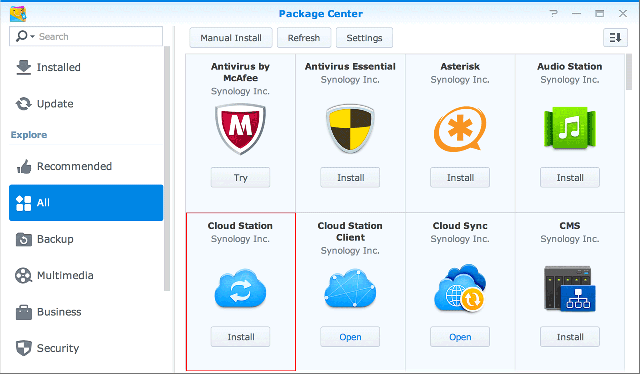
2. Aktiver Cloud Station
- Kjør Cloud Station.
- Hvis du ikke har aktivert brukerhjemfunksjonen, vil du bli bedt om å gjøre det. Klikk på OK. 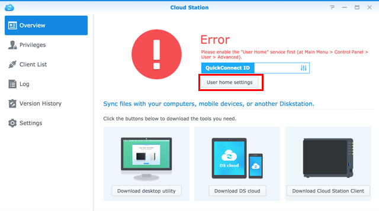
- Du vil bli videresendt til siden for brukerinnstillinger. Aktiver brukerhjem og klikk på Bruk.
- Nå går du tilbake til Cloud Station hvor du vil bli bedt om å aktivere den. Klikk Ja.
- Gå til Rettigheter og spesifiser brukerne du ønsker skal kunne bruke Cloud Station. Klikk på Lagre. 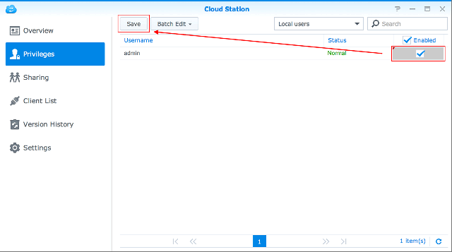

3. Installer og aktiver klient
- Gå til Cloud Station > Oversikt og klikk på knappen Datamaskiner. 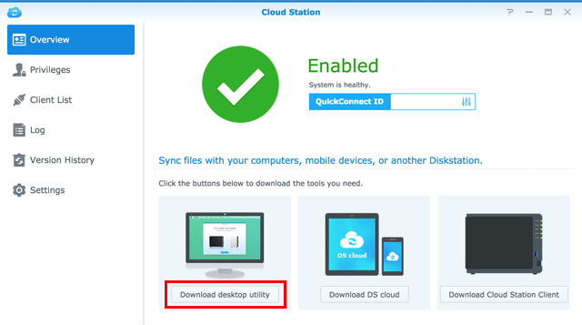
- Klikk på knappen for å laste ned Cloud Station for ditt operativsystem. (Du kan også laste ned Cloud Station fra Synology Nedlastingssenter.)
- Kjør installasjonsprogrammet på datamaskinen din og følg instruksjonene på skjermen.
- Når installasjonen er fullført, kjører du Cloud Station på datamaskinen din. Klikk på Start nå. 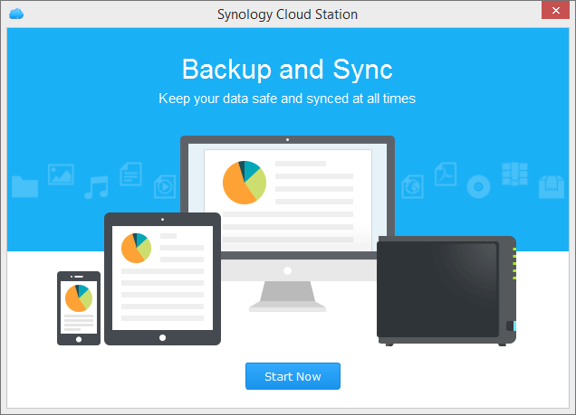
- Angi adressen til den Synology NAS som kjører Cloud Station (eller QuickConnect ID), brukernavn og passord. Du kan klikke på søkeikonet til høyre for søke etter IP-er på ditt LAN. Klikk på Neste. 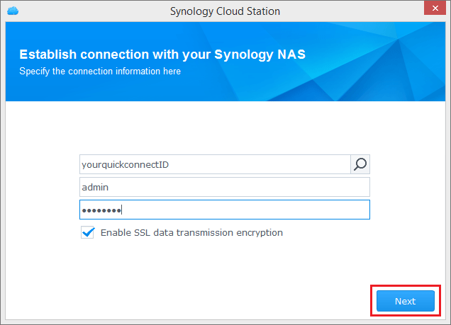
- Velg hvordan du vil sette opp oppgaven din (her velger vi Hurtigoppsett) og klikk på Neste. 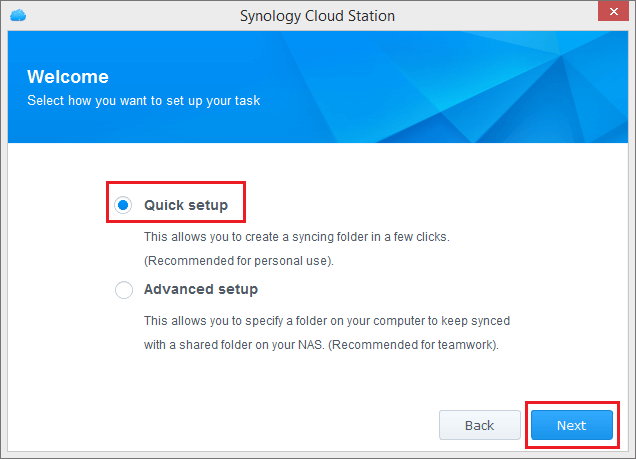
- Klikk på Fullfør for å fullføre oppsettet av din Cloud Station-mappe. 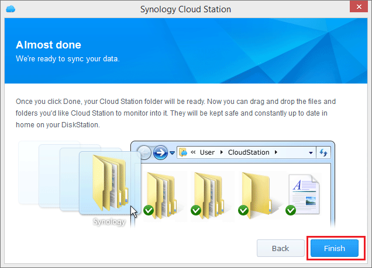
- Klikk på Åpne den nå for å åpne Cloud Station-mappen. 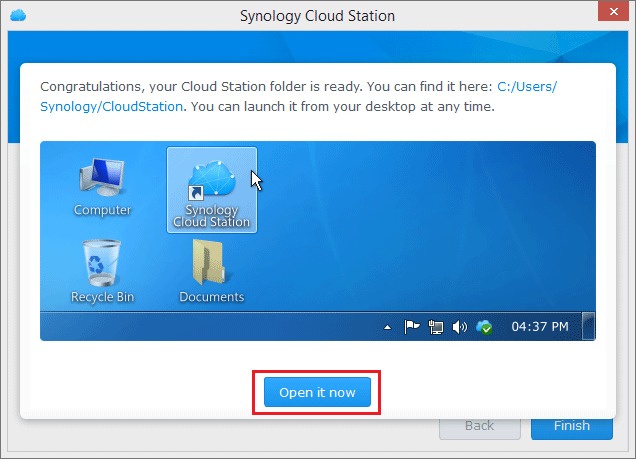
- Du finner Cloud Station-ikonet i systemstatusfeltet. 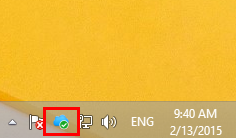
- Dobbeltklikk på Cloud Station-ikonet for å åpne statusfeltmenyen. Her kan du vise fremdriften og statusen til filene dine. Klikk på Hovedapp for å kjøre Cloud Station. 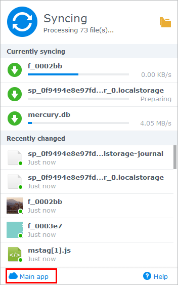
- Ved oppstart, vil du få tips om hvordan du bruker Cloud Station. Klikk på høyrepilen for å se flere tips, eller klikk på Gå til nettbaserte veiledninger for mer informasjon. Hvis du ikke trenger tips, klikker du på Ikke vis dette igjen. 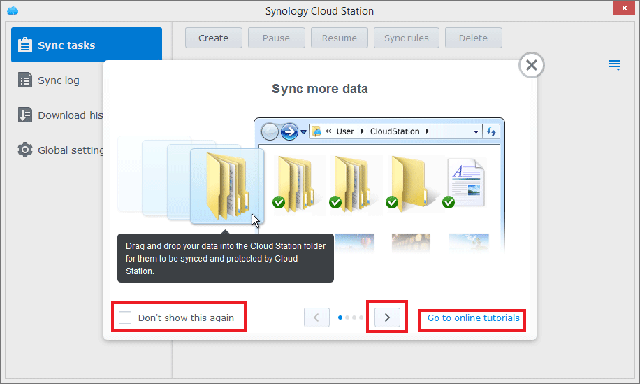
- Nå kan du administrere synkroniseringsoppgavene dine i Cloud Station. 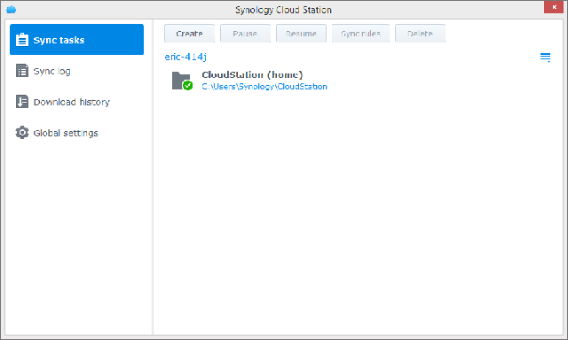
4. Synkroniser data til mobilenheter
DS cloud er tilgjengelig gratis i Apple App Store og Google Play Store. Du kan også skanne QR-koden nedenfor for å laste ned med en gang.
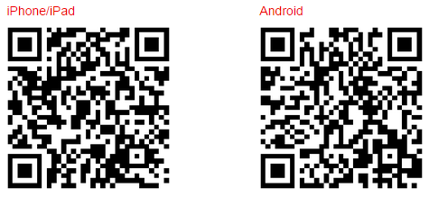